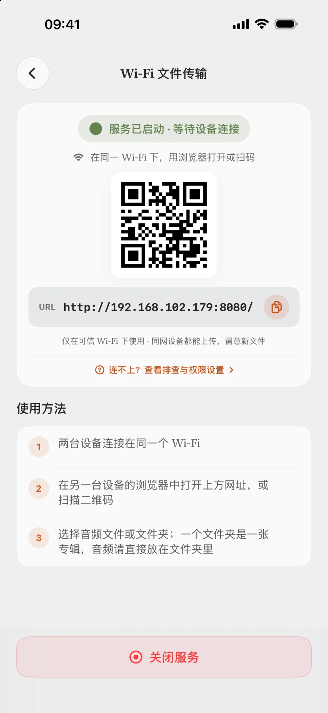
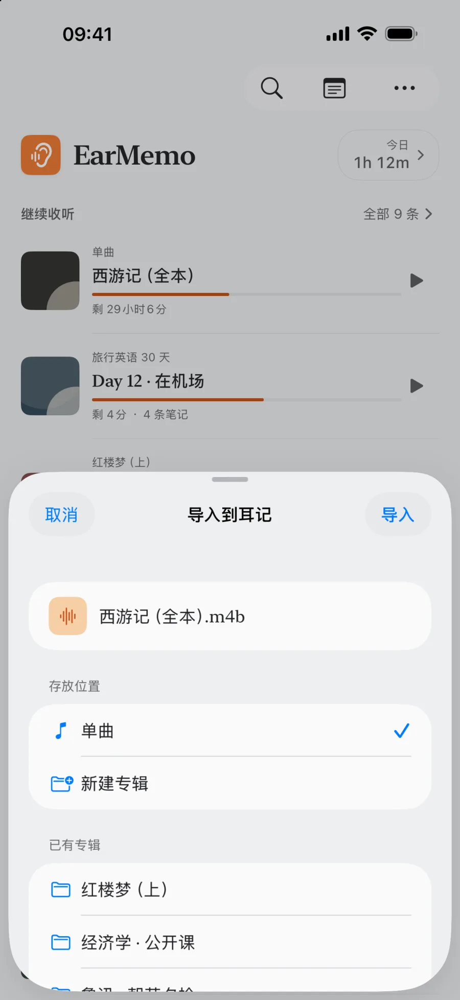

耳记 EarMemo › 不用 iTunes 传音频
不用 iTunes，电脑里的 MP3 怎么导入 iPhone（苹果手机）
把电脑里的 MP3、有声书导入 iPhone（苹果手机），已经不需要 iTunes 了。四条能走通的路是：在 Windows 或 Mac 的浏览器里隔着局域网 Wi-Fi 把文件拖进耳记 EarMemo，电脑不用装软件，也不用数据线；用 iOS 的「文件」App 导入（iCloud 云盘、SMB 共享、或者插在手机上的 U 盘）；用系统分享发进去；或者从 Mac 隔空投送。四条路都是把文件送进播放器 App，而不是送进「音乐」。
为什么 iTunes 同步不再是标准答案
苹果在 macOS Catalina 拆掉了 iTunes，同步搬进了访达，有声书和音乐还走了不同的路。与此同时 iOS 有了真正的「文件」App，App 也可以拥有自己的文稿目录。结果就是：一个现代的本地播放器可以直接接收文件，中间不再需要一个曲库数据库。
路线一 —— 在电脑浏览器里拖进去（不用线，不过云）
批量传的时候这条最快，也是 VLC 当年带火的那种方式。耳记是一样的做法：
- 让两台设备连同一个 Wi-Fi。用你自己的家里或办公室网络——公共网络的注意事项见下面。
- 在耳记里打开 Wi-Fi 传输。它会显示一个局域网地址，形如
http://192.168.1.23:8080。 - 把这个地址输进电脑浏览器。Chrome、Safari、Firefox 都行，Windows 和 Mac 都行，电脑上不用装任何东西。
- 把文件或整个文件夹拖到页面上。文件夹层级会保留，拆成 40 个文件的一本书进来还是一本书。全程不出局域网。

路线二 —— 「文件」App
「文件」App 能看到的都行：iCloud 云盘、坚果云、Dropbox、SMB 网络共享，或者通过 USB-C / 闪电口插在手机上的 U 盘。打开文件夹，选中音频，分享给播放器。文件本来就在你自己的云盘里时，走这条最省事。
路线三 —— 系统分享
适合零星的单个文件：微信、邮件里收到的，或者刚下载的。在文件上点分享，选播放器。耳记注册为音频和视频文件的分享目标。

路线四 —— 访达或隔空投送
用线连上 Mac，打开访达，进「文件」标签页，拖进 App 的文稿目录。或者从 Mac 隔空投送，iOS 问你用什么打开时选播放器。几个文件挺好，一百个文件会很烦。
什么情况走哪条
| 你的处境 | 走哪条 | 为什么 |
|---|---|---|
| Windows 电脑里的 MP3，没有 Mac | Wi-Fi 浏览器传输 | 隔空投送用不了；浏览器打开地址就能传，电脑不用装软件。 |
| 笔记本上一本 40 个文件的有声书 | Wi-Fi 浏览器传输 | 一次拖拽，保留层级，不用线。 |
| 文件已经在 iCloud 云盘或网盘里 | 「文件」App | 根本不用传，就地导入。 |
| 别人发给你的单集音频 | 系统分享 | 两下就完了。 |
| 一 U 盘的讲座录音 | 「文件」App | 把 U 盘插在手机上直接导入。 |
| 你在公共或公司 Wi-Fi 上 | 「文件」App 或数据线 | 别在你控制不了的网络里开一个本地网页服务。 |
传的是有声书？m4b 进来以后，耳记会读出它自带的章节，每本书各自记住听到哪儿，见在 iPhone 上听自己的 m4b / mp3 有声书。
关于 Wi-Fi 传输的一句提醒，大多数 App 不会印出来
Wi-Fi 传输开着的时候，耳记就是你局域网里的一个小网页服务，而且会通过 Bonjour 广播自己。同一个网络里的其他人在它开着的时候也能打开那个页面并往里传文件。他们在页面上看不到别人传的内容，但懂技术的人可以用页面里的口令查到这次传输的文件名和进度；资料库里的文件看不到，也下载不了。在自己家里的网络上没问题，在咖啡馆、酒店、开放办公网络上则是个坏主意。传完就关掉——它不在后台运行，也从不越过你的局域网网关。
什么情况下不该选耳记
- 文件带 DRM。Audible 的 .aax 和 Apple Books 买的书，怎么传都打不开，任何第三方播放器都一样。
- 你想把手机里的文件传回电脑。Wi-Fi 传输只能往手机传。
- 你想把文件放进「音乐」App。那仍然需要访达同步或 WALTR 这类工具；播放器 App 的文稿目录是另一个地方。
- 你在一个自己控制不了的网络里。那就用「文件」App 或数据线，别开本地服务。
- 你想让书库留在 NAS 上流式听。耳记播的是设备上已有的文件，它不是 NAS 客户端。
常见问题
Windows 电脑的 MP3 怎么传到苹果手机？
手机和电脑连同一个 Wi-Fi，在耳记里打开 Wi-Fi 传输，用电脑浏览器打开手机上显示的地址，把文件或文件夹拖进网页。电脑不用装软件，也不用 iTunes 和数据线。文件只在耳记里播放，不会进系统「音乐」App。
不用 iTunes 怎么把 mp3 放进 iPhone？
用一个能直接接收文件的播放器 App。用耳记的话，可以在电脑浏览器里隔着局域网 Wi-Fi 拖文件进去，也可以用 iOS「文件」App 从 iCloud 云盘或 U 盘导入，或者用系统分享发进去。这些都不需要 iTunes，也不需要同步数据库。
不用数据线能往 iPhone 传音频吗？
能。Wi-Fi 传输会开一个网页，同一网络下任意电脑浏览器都能打开并把文件拖上去。从 Mac 隔空投送也可以，适合少量文件。
Wi-Fi 传输会把我的文件传到互联网上吗？
不会。整个传输在局域网内完成——手机开一个页面，电脑把文件发给它，不会越过路由器出网。
多文件的有声书传过去还是一本吗？
整个文件夹一起传就是。耳记保留文件夹层级，拆成 40 个文件的书进来是一张专辑，而不是 40 个散曲目。
能传哪些格式？
耳记接收 mp3、m4a、m4b、aac、flac、wav、aif、aiff、caf，以及 mp4、mov、m4v（想听视频音轨的时候）。
有文件大小或数量限制吗？
Wi-Fi 传输单个文件最大 4GB，一次最多 2000 个文件，另外取决于设备剩余空间。免费版限制的是能播多少，不是能导入多少——导入的文件无论如何都保持可见、可删。